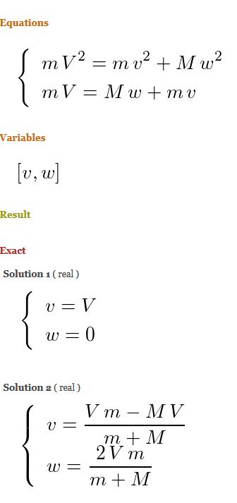
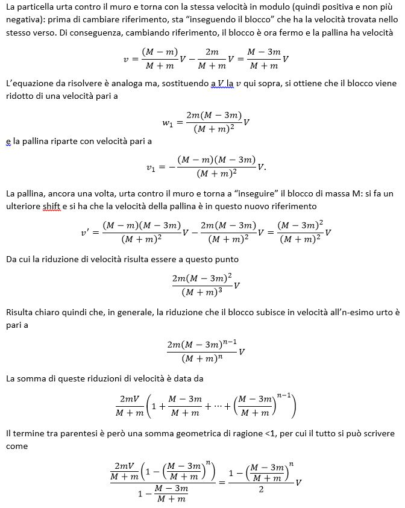

CoNVeRGe.23 apr 2009, 21:22
Un blocco di massa \(\displaystyle M\) e velocità iniziale \(\displaystyle V_0\) urta una particella ferma di massa \(\displaystyle m \ll M\). Questa, messa in moto, urta contro un muro, torna indietro, urta di nuovo col blocco, cambia di nuovo direzione, poi urta di nuovo contro il muro e così via. Supponendo che tutti gli urti che avvengono siano perfettamente elastici e avvengano sempre sulla stessa retta, dimostrare che il numero di urti che intercorrono tra la particella e il blocco prima dell'arresto di quest'ultimo sono \(\displaystyle n \approx \frac{\pi}{4}\sqrt{\frac{M}{m}}\).
Pigkappa24 apr 2009, 14:20
Nota: questo era il problema più difficile tra i 6 proposti. Ci sono vari modi di risolverlo, nessuno dei quali è banale. Provateci senza arrendervi se non vi riesce subito.
Falco5x27 apr 2009, 20:13
Mah, la soluzione proposta è talmente approssimata da apparire cervellotica.
Certo ho capito come c'è arrivato chi l'ha proposta, però basta scendere un po' di più coi piedi per terra, fare qualche iterazione e se ne trova una un po' più precisa, che ha anche il pregio di essere più semplice senza scomodare inutilmente il pi-greco, ovvero:
\(n\simeq\sqrt{\frac{M}{2m}\).
Sempre che io non abbia preso un grosso granchio, naturalmente... :D
CoNVeRGe.27 apr 2009, 21:10
Il pi-greco mi fa pensare ad un moto periodico, in cui il processo descritto rappresenterebbe un quarto del periodo, ovvero il passaggio da velocità massima del blocco a velocità nulla (e forza impulsiva della particella massima).
Ma non è molto ragionevole e spiegabile...
Su questo problema non son riuscito a perderci troppo tempo perchè mi vien da pensare che ci servono robe tipo sommatorie o relazioni tra situazione n-esima e n+1-esima, che non so proprio sviluppare...
Pigkappa27 apr 2009, 21:26
CoNVeRGe. ha scritto:Su questo problema non son riuscito a perderci troppo tempo perchè mi vien da pensare che ci servono robe tipo sommatorie o relazioni tra situazione n-esima e n+1-esima, che non so proprio sviluppare...
Non è difficile trovare come variano le due velocità in un urto. Basta che imponi conservazione di quantità di moto ed energia. Usando quelle due leggi, prova a scrivere il sistema con \(v_{n+1}\) e \(V_{n+1}\) in funzione di \(v_n\) e \(V_n\). Poi eventualmente vedo se riesco a darti un suggerimento su come andare avanti.
CoNVeRGe.27 apr 2009, 22:25
Dopo un'immersione nei calcoli mi escono:
\(\displaystyle v_{n+1} = \frac{2M}{M+m} V_n + \frac{M-m}{M+m} v_n\)
\(\displaystyle V_{n+1} = \frac{M-m}{M+m}V_n - \frac{2m}{M+m}v_n\)
Chi l'avrebbe mai detto che uscivano così 'semplici' da tutta quella roba? :?
In questo l'aver già visto problemi aiuta in maniera fondamentale al test, non c'è che dire.
Forse adesso si dovrebbe trovare \(\displaystyle V\) in funzione di \(\displaystyle n\) e porlo poi uguale a 0. (sapendo della relazione tra \(\displaystyle v_{finale}\) e \(\displaystyle V_0\))
E questo non saprei comunque farlo..
Falco5x28 apr 2009, 22:09
pascal ha scritto:
...
Bravo, sono ammirato per la soluzione e la rappresentazione geometrica ineccepibile. Provo sempre ammirazione per chi riesce a visualizzare in questo modo soluzioni che se lasciate nella sfera astratta dell'algebra rimarrebbero poco intuitive.
CoNVeRGe.29 apr 2009, 16:42
Mmm.. diciamo che questo problema è stato dato per tenere impegnati duramente per tutte le 6 ore anche i partecipanti più bravi.. :mrgreen:
CoNVeRGe.29 apr 2009, 18:35
pascal ha scritto:
si ha per la conservazione dell’energia e della quantità di moto in un generico urto:
\(\displaystyle v_n - v_{n-1}= V_n +V_{n-1}\)
Notevole soluzione :D Solo che ora non riesco a vedere come si ottiene quanto ho citato.
Falco5x ha scritto:
A causa della condizione M>>m ci si può aspettare che tra un urto e l'altro la V cambi molto poco, per cui posso assimilare n alla variabile continua x; in tale ipotesi il primo membro dell'equazione precedente può essere assimilato alla derivata seconda della funzione V(x).
Perchè puo essere assimilato alla derivata seconda e non alla prima, o a che altro? Sul fatto che V cambi poco ci sono.
Falco5x ha scritto:
Giusto per puntualizzare una cosa che forse per te è scontata, le tue formule sono giuste solo se si sottintende che la \(\displaystyle v_{n+1}\) e la \(\displaystyle v_{n}\) hanno versi opposti. Insomma le tue velocità vanno prese in modulo. Le formule corrette (velocità con segno) avrebbero i segni invertiti sulle \(\displaystyle v_{n}\)
Ho capito, intendi dire che le formule sono corrette perchè in caso le v siano discordi si fissa un verso positivo e le v assumono di per sè un segno a seconda che abbiano verso positivo o negativo.
In effetti non sono mai rigoroso/preciso sui segni, in particolare nel caso delle velocità, devo ancora impararlo bene.
Falco5x29 apr 2009, 21:02
CoNVeRGe. ha scritto:Falco5x ha scritto:
A causa della condizione M>>m ci si può aspettare che tra un urto e l'altro la V cambi molto poco, per cui posso assimilare n alla variabile continua x; in tale ipotesi il primo membro dell'equazione precedente può essere assimilato alla derivata seconda della funzione V(x).
Perchè puo essere assimilato alla derivata seconda e non alla prima, o a che altro? Sul fatto che V cambi poco ci sono.
E' il punto che mi fa più schifo, ma te lo spiego ugiualmente:
\(\frac{d^2V( n )}{dn^2} = \frac{d}{dn}\frac{dV( n )}{dn} = \frac{d}{dn} \frac{V( n + dn) - V( n )}{dn} =\)
\(=\frac{\frac{V(n + dn) - V( n )}{dn} - \frac{V( n ) - V( n - dn )}{dn}}{dn}\)
Poiché la minima variazione per dn è 1, allora posso dire
\(\frac{d^2V( n )}{dn^2} =( V_{n + 1} - V_n}) - ( V_n - V_{n - 1})\)
Fa abbastanza ribrezzo, sono d'accordo, ma questa non poteva essere la derivata prima o qualcosa d'altro: per come è stata costruita somiglia alla derivata seconda.
sg_gamma17 nov 2018, 17:09
Sono consapevole di riesumare un topic vecchissimo, ma volevo chiedere: mi sono imbattuto recentemente in questo problema e, nel provare una strada risolutiva, sono giunto a qualcosa di abbastanza improbabile. Vorrei perciò sottoporla per capire quale distrazione di fondo abbia commesso...
La mia idea per risolvere il problema è la seguente: prendo in considerazione il sistema di riferimento solidale con il blocco di massa M e calcolo dapprima in questo le velocità della pallina e della massa dopo l’urto: in particolare il blocco M risulta avere una velocità nel verso opposto rispetto a quello in cui si stava muovendo nel sistema del laboratorio. La pallina urta contro il muro e torna indietro: a questo punto cambio sistema di riferimento, “aggiornandomi” e collocandomi in quello attuale della massa M calcolando così l’ulteriore riduzione della velocità e sostituendo nelle equazioni di volta in volta a \(V_0\) la velocità trovata precedentemente, reiterando il processo finché la somma dei risultati nei vari sistemi, che sono appunto le riduzioni di velocità, non corrispondono alla velocità stessa che il blocco aveva all’inizio (nella pratica, il sistema in cui il blocco è fermo e quindi solidale con questo è quello di laboratorio stesso). A questo punto calcolo il primo urto, in cui la particella ha velocità V verso il blocco, e ottengo:

- Primo urto.JPG (27.27 KiB) Visto 8904 volte

- Tentativo.JPG (95.46 KiB) Visto 8904 volte
Il problema della soluzione dunque è questo: al tendere di n a infinito, il blocco risulta tendere solo a metà della sua velocità iniziale.
sg_gamma24 feb 2019, 21:02
Faccio un up informativo, visto che poi la ragione è venuta fuori: nel continuo cambio di sistemi di riferimento, bisogna considerare che anche il muro ha in questi una sua velocità al fine di calcolare gli urti elastici della pallina con il suddetto; nella mia soluzione si era assunto che fosse sempre fermo, cosa che in effetti non è vera.
nicarepo26 feb 2019, 10:41
Giusto perché si è tornati su questo problema, sicuramente avrete visto questo: https://www.youtube.com/watch?v=jsYwFizhncE. Nel caso non lo abbiate visto, vi consiglio vivamente di farlo (e di guardare anche il secondo sempre collegato a questo, anche perché di esercizi sugli specchi ne sono usciti un paio anche alla Normale). Nel video suppone che il rapporto delle masse sia una potenza di 100 e conta gli urti anche con il muro, finché la massa grande non torna indietro (quindi x4).